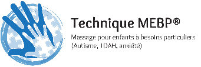

Venez vivre une expérience sensorielle et spirituelle unique dans
un
moment de pure détente et de sagesse corporelle
Ghislaine Gouin, massothérapeute agréée par la Fédération Québécoise des massothérapeutes.
Formation de plus de 1200 heures en Shiatsu Thérapeutique et en Massage Californien de l’école Guijek de Montréal, école spécialisée dans la dimension psycho-corporelle du massage.
Formation également en Shiatsu et Périnatalité et Massage pour enfants et Massage sur chaise en entreprise.
Le massage Shiatsu de tradition japonaise s’effectue sans huile, sur futon ou sur table avec des vêtements confortables. Ce massage est inspiré des 12 méridiens de l’acupuncture ainsi que de la théorie des 5 éléments : feu, terre, métal, eau et bois. Des manoeuvres d’étirements et de mobilisations articulaires font partie intégrante du massage ce qui soulage la musculature et procure un sentiment profond de détente.
La Technique MEBP stimule le système sensoriel et proprioceptif, ce qui amène plusieurs bienfaits.
Le massage adapté à l'enfant lui apporte un état de calme, lui permet d'avoir une meilleure conscience corporelle, améliore sa qualité de sommeil, augmente sa tolérance au toucher et encore plus.Le massage se donne au sol, sur un futon et par dessus les vêtements. La technique est soutenue par une routine visuelle et des outils de repère de temps et sensoriels. Possibilité également d'adapter le massage à l'huile sur table.

Le pouvoir du toucher offert à une personne en soins palliatifs est inestimable. En offrant à la personne un massage doux, réconfortant et adapté à sa condition lui permet de s'abandonner et souvent d'atténuer les douleurs physiques et émotionnelles. Possibilité de recevoir le massage à votre domicile, en centre ou en maison de soins palliatifs.
Massage à l’huile sur table a pour but d’harmoniser la circulation de l’énergie du corps et de délier la musculature en utilisant des pressions glissées avec les avant-bras, les coudes, les mains et les pouces sur les trajets des méridiens.
Massage global qui se caractérise par de longs mouvements fluides et harmonieux qui sculptent tout le corps. Le massage Californien intègre des mouvements globaux et sollicite tout le corps, ce qui procure une sensation de détente au-delà des zones douloureuses.
Que ce soit l’apprentissage du massage parent-bébé ou le massage de l’enfant, ce massage permet d’augmenter l’état de bien-être de l’enfant, de diminuer les tensions reliées à la croissance et d’apprivoiser la relaxation.
Pour atténuer les inconforts liés à la maternité et mieux vivre les différentes étapes de la grossesse, de l'accouchement et des deux premières années de vie de l'enfant.